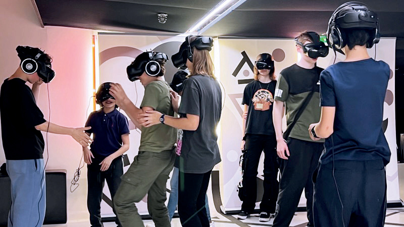

Les musées, galeries et lieux publics deviennent des espaces narratifs augmentés.
Les murs s'effacent, les possibilités narratives se multiplient.
Le virtuel rencontre le vivant : scène, performance, live.